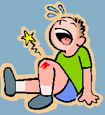

Psycho-educatie over wat een trauma is en welke soorten trauma er zijn.
Trauma betekent eigenlijk: wond.
Het is een emotionele beschadiging die is ontstaan na het meemaken van een schokkende gebeurtenis.
Als het verwerken van een dergelijke gebeurtenis niet goed lukt, blijven er klachten bestaan die het dagelijks leven verstoren.

Er bestaan twee soorten trauma
Acuut
Een onverwachte, schokkende gebeurtenis, bijvoorbeeld een auto-ongeluk
Chronisch
Schokkende gebeurtenissen die veel langer duren,
bijvoorbeeld misbruik of oorlogsgeweld
Een voorbeeld van een chronisch trauma is kindermishandeling.
Wanneer iemand bang is na een auto ongeluk is dat een normale reactie op iets schokkends. Je hebt ook tijd nodig om het te verwerken en bij te komen.
Als de verwerking te lang duurt of helemaal niet lukt, heb je misschien een trauma.